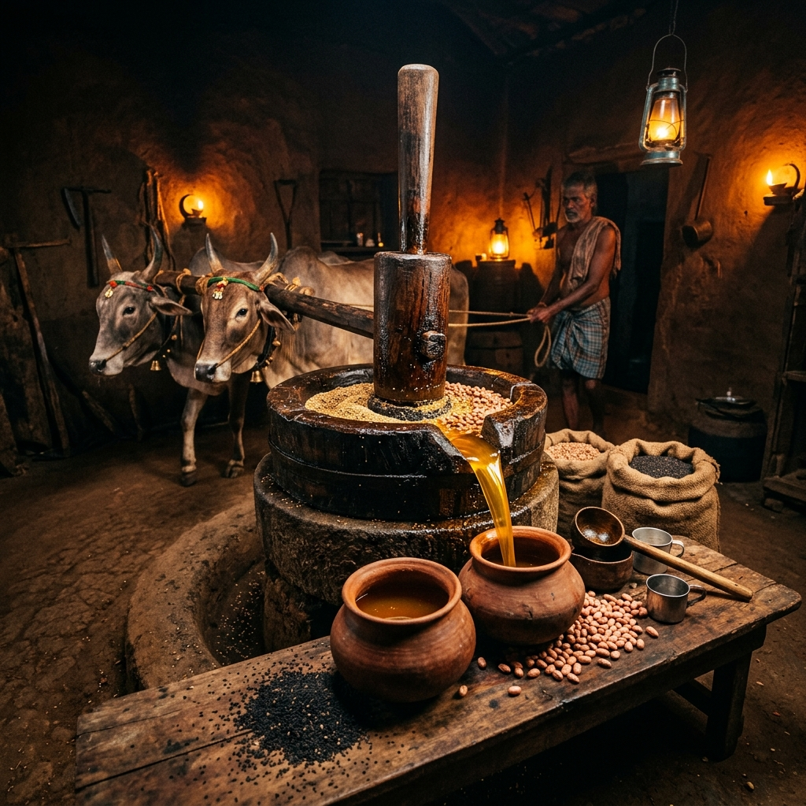
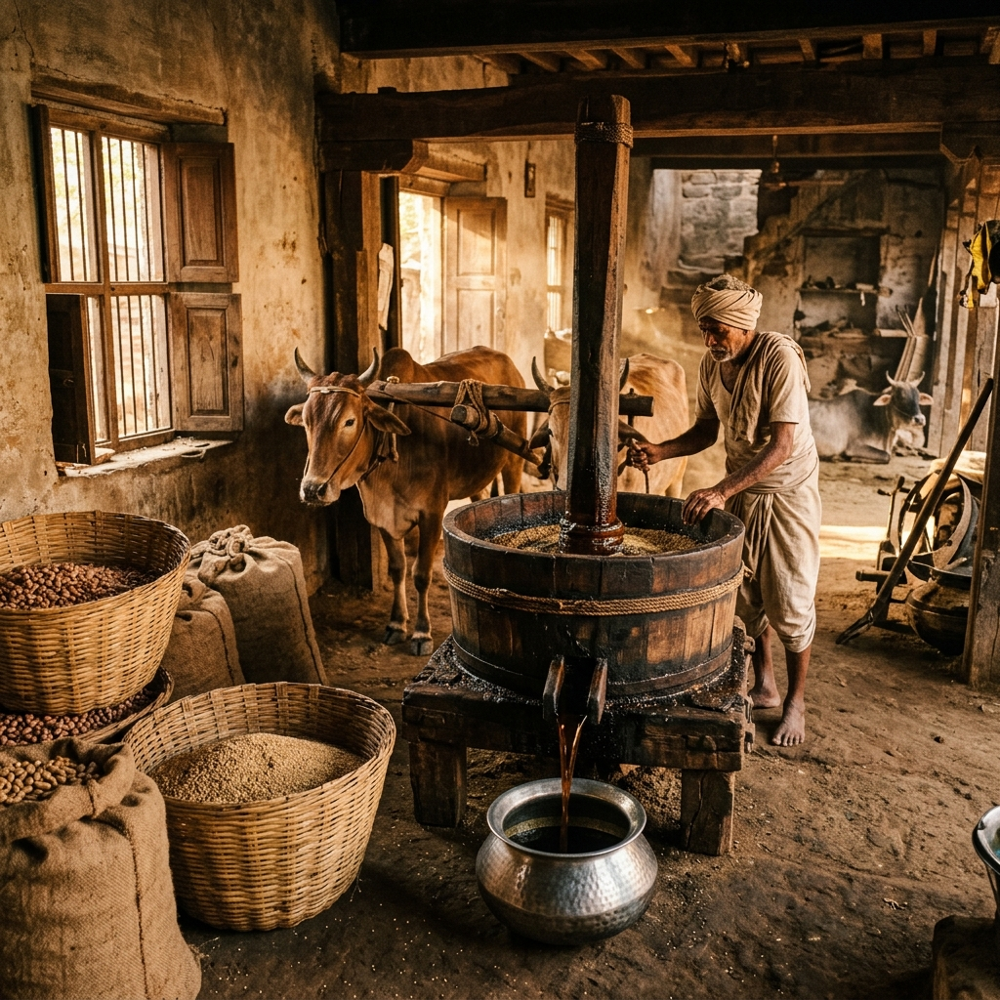
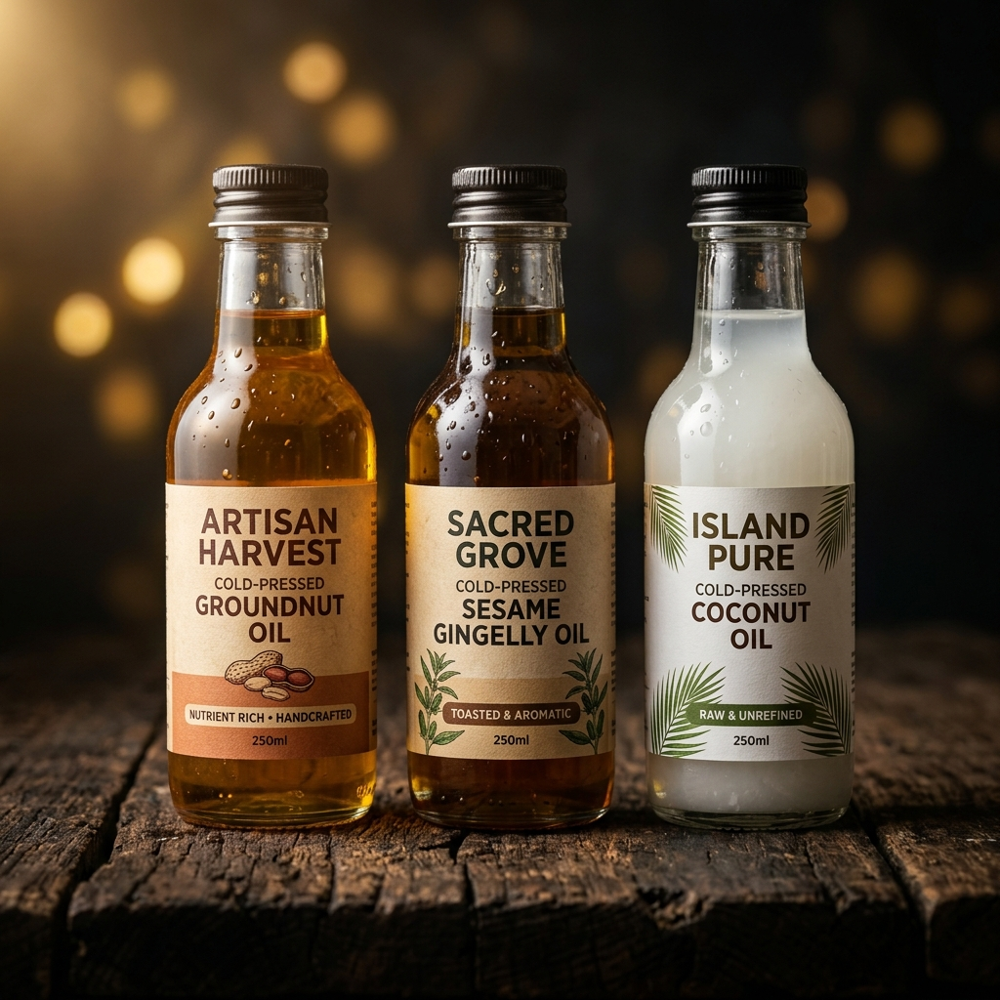

Cold-pressed the traditional way — preserving nutrients, flavour, and purity from seed to bottle. Taste the difference nature intended.

Vetri Oil Mill was founded in the heart of Sankarapuram with a simple belief — that the food we eat should be as pure as nature intended. For over three decades, we have been using the ancient Chekku (wood-pressed) method to extract oils without any heat or chemicals.
Our mill is nestled in the Kallakurichi district, serving thousands of households who trust us for their cooking oils. Every drop is handcrafted with care, retaining all the natural nutrients, antioxidants, and flavours that make traditional oils truly special.
Each oil is sourced from the finest seeds and extracted using traditional wood-press techniques for maximum purity.

கடலை எண்ணெய்
Rich in monounsaturated fats and Vitamin E. Our cold-pressed groundnut oil has a natural nutty flavour perfect for deep frying, sautéing, and everyday Indian cooking.
நல்லெண்ணெய்
The traditional "Nallennai" — deeply revered in Tamil culture for its rich flavour, medicinal properties, and antioxidant-rich composition. A kitchen essential.
தேங்காய் எண்ணெய்
Cold-pressed from fresh coconuts, our coconut oil retains its natural aroma, lauric acid, and medium-chain triglycerides. Ideal for cooking, hair and skincare.
We use the age-old wooden chekku press that operates at low temperatures, preserving every bit of nutrition in your oil.
No chemicals, no preservatives, no artificial colours. Just 100% pure oil from seed to bottle — nothing added, nothing removed.
Cold-pressing retains natural Vitamin E, antioxidants, and essential fatty acids that are destroyed by heat in commercial refining.
Oils are freshly pressed from locally sourced seeds. No old stock. Every bottle is made-to-order for maximum freshness.
Three generations of families in Kallakurichi district trust Vetri Oil Mill. Our reputation is built on purity and quality.
Premium quality need not mean premium price. We offer the best cold-pressed oils at honest, affordable rates directly from the mill.
"I have been buying nallennai from Vetri Oil Mill for 10 years. The aroma and taste is incomparable. You can literally smell the difference from supermarket oils!"
"After switching to Vetri's groundnut oil, my husband's cholesterol improved significantly. We trust only this mill for our family's cooking oil needs."
"Vetri Oil Mill delivers the purest coconut oil I have ever used — both for cooking and for my hair. The quality and freshness is always consistent!"
No. 10, Sankarapuram Main Road,
Murarbad, Kallakurichi District,
Tamil Nadu – 606 213
Call or visit us directly to place bulk and retail orders. Fresh oil pressed and ready for pickup.